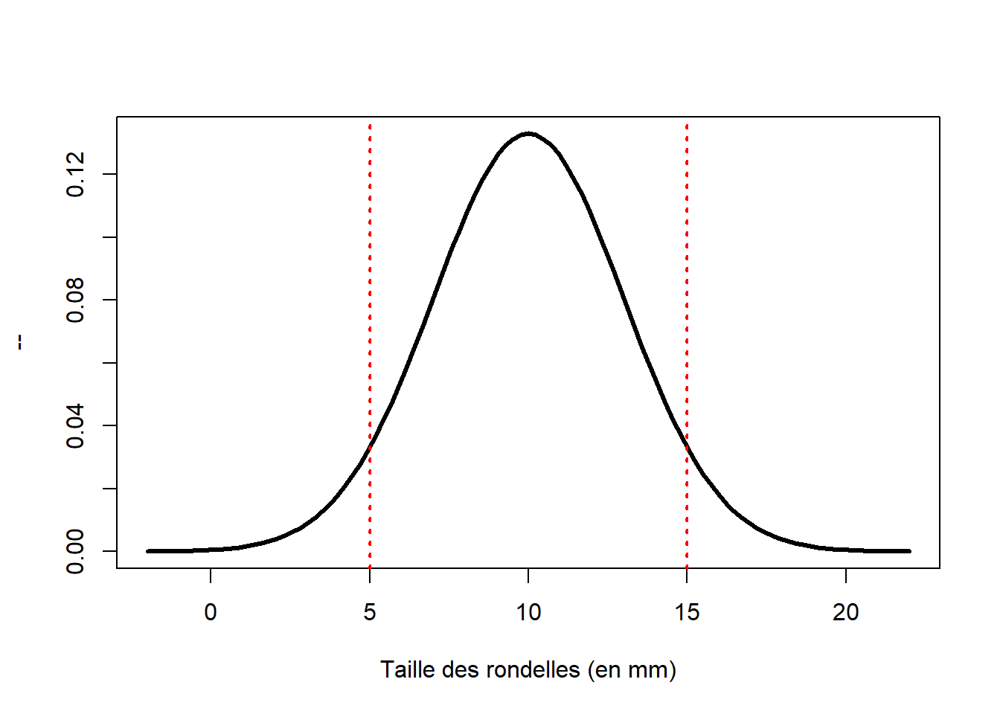
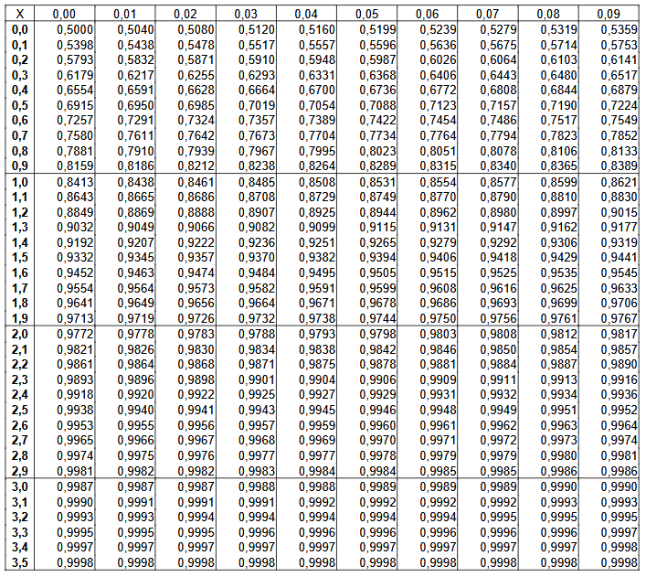
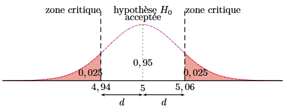

Premiers pas sur les tests statistiques
Tests d’hypothèses
L’association Ma Cuisine Locale prépare avec soin, toute les semaines, les paniers de fruits et légumes de ses adhérents. Pour cela ils utilisent des cageots en bois fabriqués par une entreprise locale.
L’entreprise vend ses cageots comme ayant une masse de 100 g chacun. Pour le plaisir de faire un peu de staistiques les étudiants se proposent de peser chacun des paniers et de vérifier par un test statistique si l’affirmation de l’entreprise est coorecte.
Une balance est utilisée afin de peser chaque cageot.
On ne peut espérer que tous les cageots sortant de la machine de l’entreprise pèsent exactement 100 g. On peut seulement exiger que l’espérance mathématique des masses de tous les cageots produits soit de 100 g.
Ainsi, un ensemble de 50 cageots pèsera par exemple 4.97 kg. Doit-on en conclure que la machine est mal réglée ? Si, après avoir réglé différemment la machine, une nouvel ensemble de 50 cageots pèse 5.02 kg, peut-on en conclure que la machine est mieux réglée ?
Ce sont les tests de validité d’hypothèse qui permettent de prendre une décision. Ces décisions seront prises avec un certain risque a priori.
Les notions seront abordées grâce à des exemples. Pour chaque test, on appliquera le cheminement suivant :
Construction et utilisation du test d’hypothèse.
Étape 1 : détermination de la variable aléatoire de décision et de ses paramètres,
Étape 2 : choix des deux hypothèses : l’hypothèse nulle \(H_o\) et l’hypothèse alternative \(H_1\),
Étape 3 : l’hypothèse nulle étant considérée comme vraie et compte tenu de l’hypothèse alternative, détermination de la zone critique selon le niveau de risque \(\alpha\) choisi ou donné,
Étape 4 : rédaction d’une règle de décision.
Étape 5 : calcul des caractéristiques d’un échantillon particulier puis application de la règle de décision.
Test bilatéral relatif à une moyenne
Exemple :
Une machine produit des rondelles de légumes dont l’épaisseur est une variable aléatoire X d’écart type 0,3 mm. La machine a été réglée pour obtenir des épaisseurs de 5 mm . Un contrôle portant sur un échantillon de 100 rondelles a donné 5,07 mm comme moyenne des épaisseurs de ces 100 rondelles.
Peut-on affirmer que la machine est bien réglée au seuil de risque de 5% ?
1. Variable aléatoire de décision
Soit \(\mu\) l’espérance mathématique de X, c’est-à-dire la moyenne des épaisseurs de toutes les rondelles produites par la machine ainsi réglée.
Considérons la variable aléatoire M qui, à chaque échantillon de taille 100 (individus), associe sa moyenne.
La taille des échantillons étant suffisamment grande, on considère que M suit la loi normale suivante
\[\mathcal{N}\left(\mu \ ; \frac{0,3}{\sqrt{100}}\right) = \mathcal{N}\left(\mu \ ; 0,03\right)\]
M sera la variable aléatoire de décision.
2. Choix des hypothèses
On estime que la machine est bien réglée si la moyenne de toutes les rondelles produites par la machine est de 5 mm. C’est donc l’hypothèse \(\mu=5\) que nous allons tester. On l’appelle l’hypothèse nulle \(H_0\).
Sinon, on choisit comme hypothèse alternative l’hypothèse \(H_1\) suivante « \(\mu \neq 5\) ».
Hypothèses
- Hypothèse nulle : \[H_0 : \qquad \mu = 5\]
- Hypothèse alternative : \[H_1 : \qquad \mu \neq 5\]
Recherchons comment la moyenne \(\mu_e\) d’un échantillon de 100 rondelles peut confirmer ou non l’hypothèse \(H_0\).
3. Zone critique
Dons le cas où l’hypothèse \(H_{0}\) est vraie, d’après l’énoncé la variable aléatoire M suit la loi \[\mathcal{N}(5 \ ; \ 0,03)\]
On choisit un seuil de tolérance \(\alpha\) égale à \(5 \%\). On cherche alors le réel \(d\) tel que \[P(5-d \leq M \leq 5+d)=0,95\]
Nous allons centrer et réduire la loi de normale que suit M. La variable aléatoire T définie comme \[T=\dfrac{M-5}{0,03}\] suit la loi normale centrée réduite \(\mathcal{N}(0,1)\).
\[\begin{align*} P(5-d \leq M \leq 5+d)=0,95 &\Longleftrightarrow P(5-d \leq 0,03 T+5 \leq 5+d) = 0,95 \\ &\Longleftrightarrow P\left(-\frac{d}{0,03} \leq T \leq \frac{d}{0,03}\right)=0,95 \end{align*}\]
Or
\[\begin{align*} P\left(-\frac{d}{0,03} \leq T \leq \frac{d}{0,03}\right) &= P\left(T \leq \frac{d}{0,03}\right) - P\left(T \leq -\frac{d}{0,03}\right) \end{align*}\]
de plus
\[P\left(T \leq \frac{-d}{0,03}\right) = P\left(T \geq \frac{d}{0,03}\right)\] et
\[ P\left(T \geq \frac{d}{0,03}\right) = 1 - P\left(T \leq \frac{d}{0,03}\right) \] donc
\[P\left(-\frac{d}{0,03} \leq T \leq \frac{d}{0,03}\right) = 2 P\left(T \leq \frac{d}{0,03}\right) - 1\]
Ce qui permet d’écrire
\[\begin{align*} P(5-d \leq M \leq 5+d)=0,95 &\Longleftrightarrow 2 P\left(T \leq \frac{d}{0,03}\right) - 1 = 0,95 \\ &\Longleftrightarrow P\left(T \leq \frac{d}{0,03}\right) = 0,975 \end{align*}\]
On trouve par exemple à l’aide d’une table de la loi normale centrée réduite :

Table de la loi normale centrée réduite :
La table permet de lire la probabilité suivante \[P\left(Z \leq t\right)\] où on peut lire : - sur la premiére colonne la valeur du paramètre \(t\) avec une seule décimale - sur la première ligne la valeur de la deuxième décimale \(t\)
Dans le reste du tableau on peut lire la valeur de la probabilité suivante \(P\left(Z \leq t\right)\).
Exemple : La combinaison de la dernière ligne et de la cinquième colonne nous permet décrire \[P\left(Z \leq 3.54\right) = 0,9998\]
On peut donc lire
\[\frac{d}{0,03}=1,96 \Longleftrightarrow d=0,0588 \approx 0,06\]
L’intervalle de confiance est donc l’intervalle : \[[5-0,06 ; 5+0,06]=[4,94 ; 5,06]\]

La probabilité qu’un échantillon ait une moyenne située hors de cet intervalle étant 0,05, on peut considérer que cet événement est rare. Ainsi, la moyenne de notre échantillon \(\mu_{e}=5,07\) (cf. énoncé) nous amène à douter de la validité de l’hypothèse \(H_{0}\).
Ne perdons pas de point de vue qu’il se peut, malgré tout, que la machine soit bien réglée et que notre échantillon fasse partie des \(5 \%\) de ceux ayant une moyenne hors de l’intervalle trouvé. C’est pourquoi cette région est appelée zone critique.
4. Règle de décision.
Si la moyenne de l’échantillon n’est pas située dans la zone critique, on accepte \(H_{0}\), sinon, on refuse \(H_{0}\) et on accepte \(H_{1}\).
5. Conclusion.
Puisque 5,07 appartient à la zone critique, on décide de rejeter l’hypothèse \(H_{0}\) et d’accepter l’hypothèse alternative \(H_1 \ : \ \mu \neq 5\) (la machine n’est pas bien réglée).
Test unilatéral relatif à une moyenne
Exemple :
La durée de vie (en heures) des ampoules électriques produites par une usine est une variable aléatoire X d’écart type 120. Le fabricant annonce qu’en moyenne, les ampoules ont une durée de vie de 1120 heures.
On demande de rédiger une règle de décision pour vérifier l’affirmation du fabriquant, au seuil de risque de de 5 %, en testant un échantillon de 36 ampoules.
Test unilatéral relatifs à une fréquence
Exemple :
Un joueur qui doit choisir au hasard une carte dans un jeu de 32 cartes obtient certains avantages s’il découvre un roi. On constate qu’il a retourné 134 fois un roi sur 800 essais.
Peut-on présumer, au seuil de risque de 1 %, que ce joueur est un tricheur?
Tests de comparaison
Comparaison de deux moyennes
Exemple :
Une entreprise fabrique des sacs en plastique pour déchets. Afin de surveiller la production, elle effectue des contrôles réguliers portant sur le poids maximum que les sacs peuvent supporter.
A une première date \(t_1\), le contrôle de 100 sacs a donné une moyenne de 58 kg et un écart type de 3 kg.
A la seconde date \(t_2\), le contrôle de 150 sacs a donné une moyenne de 56 kg et un écart type de 5 kg.
Peut-on considérer, au risque de 4 %, que la qualité des sacs a évolué entre les deux dates?
Comparaison de deux fréquences
Exemple :
A l’issue d’un examen, il y a 23 reçus et 17 ajournés dans une classe et 15 reçus et 25 ajournés dans une autre classe.
La différence observée entre les deux pourcentages de réussite est-elle significative d’une différence de niveau entre les deux classes, au seuil de 5 % ?